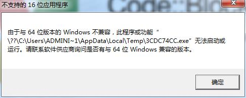
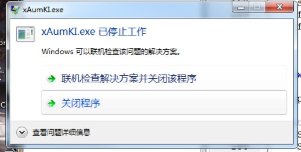

3.2.3. "Unsupported 16-Bit Application" / "Has Stopped Working"
Note
This page was missing from the saved files and was restored from an Internet Archive snapshot (2026-08-24); it may differ slightly from the current online version.
When you click the [Run] or [Build and debug] button (that is, these two buttons: ), a message similar to the following appears:


This is because the program for the target device is not a Windows application and cannot run on Windows (it runs on the device instead).
Click the [Build] button (that is, )
Note
If you clicked the [Build ] button and this error still pops up, your computer has usually been infected with a virus; remove the virus and try again. (This is because some viruses try to infect and run every file that is built.)